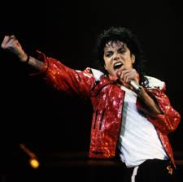

Michael Jackson was born on August 29th 1958. He was an American singer, songwriter, and dancer known as the “King of Pop.” Born in Indiana, he rose to fame as a child with The Jackson 5 before launching one of the most successful solo careers in music history.
His albums Off the Wall, Thriller and Bad transformed pop music. Jackson revolutionised music videos with iconic works like “Thriller,” “Beat It,” and “Billie Jean,” and popularised signature moves such as the Moonwalk.
Despite personal challenges and controversy, he remained a major cultural figure. He died in 2009 while preparing for a comeback tour, leaving a lasting legacy as one of the most influential entertainers in history.
Thriller – 1983
Billie Jean – 1983
Beat It – 1982
Smooth Criminal – 1987
Rock With You – 1979
Off the Wall – 1979
Thriller – 1982
Bad – 1987
HIStory: Past, Present and Future, Book I – 1995
Blood on the Dance Floor – 1997
Invincible – 2001
Released Thriller, the best-selling album in music history.
First artist to win 8 Grammy Awards in one night.
One of the most awarded artists in history with over 400 awards.
Inducted into the Rock and Roll Hall of Fame twice.
Only artist to have a top-ten single in six different decades.